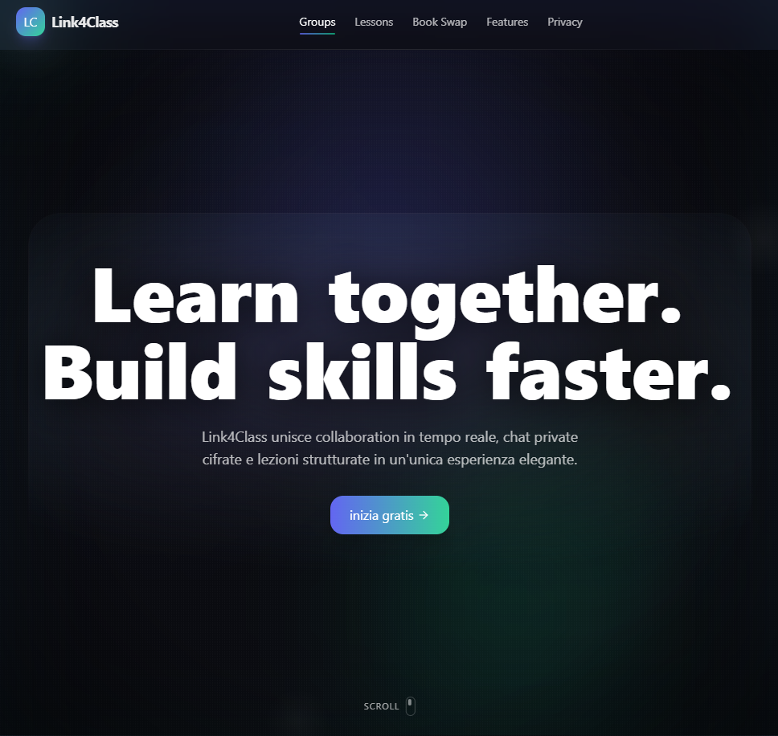
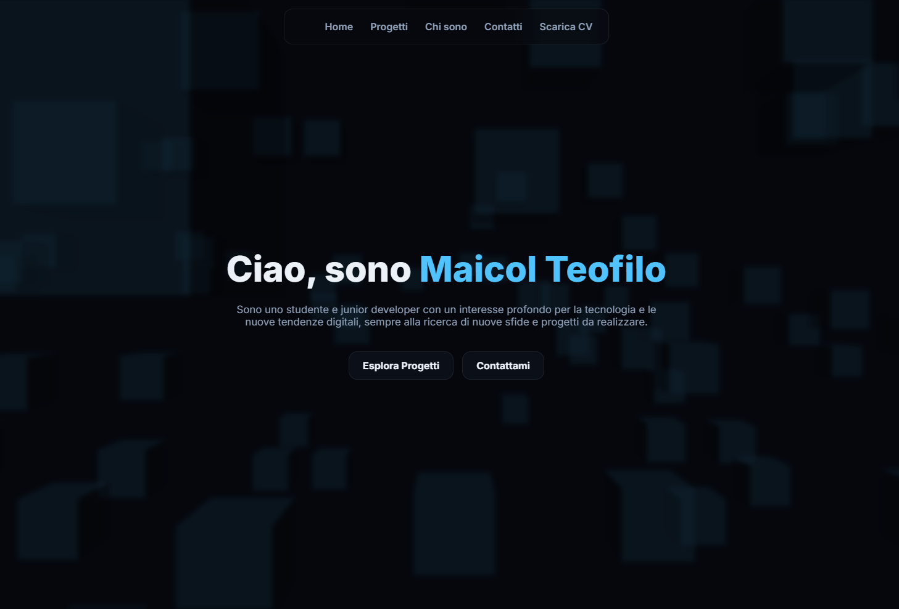

Progetti
Clicca per esplorare ciascun progetto

Link4class
Piattaforma scolastica

Portfolio personale
Esperienza Web per la condivisione
Automazioni Python
Script smart
Sono uno studente e junior developer con un interesse profondo per la tecnologia e le nuove tendenze digitali, sempre alla ricerca di nuove sfide e progetti da realizzare.
Clicca per esplorare ciascun progetto
Piattaforma scolastica
Esperienza Web per la condivisione
Script smart
Un po' di background su di me
Scopro una forte passione per l'informatica e inizio a scrivere il primo programma in Python.
Ho iniziato a sviluppare siti web, concentrandomi su UI/UX con l'obbiettivo di renderli di facile accessibilità ed utilizzo.
Ho implementato le conoscenze della programmazione ad Arduino e Raspberry Pi per creare progetti sperimentali di domotica.
Comincio a sviluppare un'idea, un concetto di condivisione tra studenti chiamato link4class: una piattaforma dove gli studenti possono aiutarsi, condividere ed ampliare le loro conoscenze.
Ottobre 2025 si conclude la prima parte di ciò che link4class vuole diventare. Ora ho lanciato questo portfolio per condividere ciò che sono stato e ciò che farò: i miei lavori e progetti.
Questi sono i linguaggi e strumenti che conosco e quelli che sto imparando
Entra in contatto o segui i miei lavori